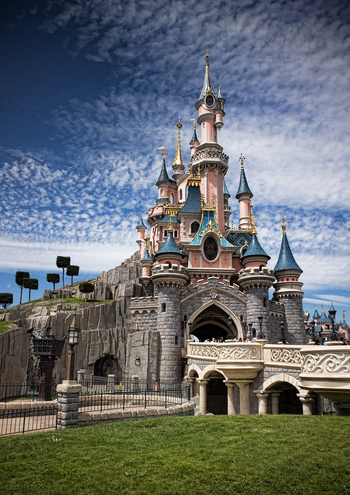

Francia es considerada como uno de los estados más antiguos de todo el continente europeo, el nombre como hoy la conocemos proviene de la Edad Media, previamente a esto, esta porción de tierra correspondía a la Galia, aunque su territorio ha sido modificado a lo largo de la historia de la humanidad en varias ocasiones debido a las guerras hegemónicas europeas, ya que este país trato de imponerse en repetidas ocasiones contra casi todos los países de este continente.
Uno de los momentos celebres de la historia de Francia es la conocida y decisiva para la humanidad Revolución Francesa, el cual un periodo de gran inestabilidad social y política que se llevó a cabo ente 1789 y 1799, en donde se erradico la dictadura y se eliminaron las bases política y económicas que había sido sedimentadas por la antigua monarquía.
El golpe de estado protagonizado por Napoleón Bonaparte llevó a dejar a un lado la democracia y volver a un absolutismo, en donde se vivió el primer Imperio Francés liderado por este militar, producto de las batallas en Italia y en Egipto llevo a que algunos años después los científicos mandados por él llevara a crear la egiptología.
La apuesta era "estudiar la posibilidad de levantar sobre el Campo de Marte una torre de hierro, con una base cuadrada, con 125 metros de lado y 300 metros de alto". Seleccionado entre 107 proyectos, se aceptó el de Gustave Eiffel, empresario, Maurice Koechlin y Emile Nouguier, ingenieros y Stephen Sauvestre, arquitecto.
Los dos ingenieros principales de la empresa Eiffel, Émile Nouguier y Maurice Koechlin, en junio 1884 tuvieron la idea de una torre muy alta, diseñada como un gran pilar con 4 columnas separadas en la base a modo de patas que se unían en la parte superior, unidas entre sí por vigas metálicas dispuestas en intervalos regulares.
El proyecto de la torre era una extensión de este principio con una altura de 300 metros, es decir, el equivalente a la cifra simbólica de 1000 pies de los soportes de puentes. El 18 de septiembre de 1884 Eiffel patentó “un nuevo diseño que permitía construir soportes y postes metálicos capaces de alcanzar una altura superior a 300 metros”.
 Eurodisney - Fig 2
Si durante tus vacaciones en Francia quieres aventurarte junto a tu familia a un mundo de fantasía lleno de príncipes y princesas, entonces tienes que visitar Eurodisney.
Se trata de un complejo recreacional ubicado en Mane La Vallée, en el departamento de Seine et Marne al este de París, que fue inaugurado en 1992. En sus 2.230 hectáreas encontrarás mucha diversión en atracciones como Crush's Coaster, Discovery Arcade, Big Thunder Montain, entre otras.
Asimismo cuentas con hoteles y más de 29 restaurantes y bares, spa, centro fitness y tiendas. Adicionalmente podrás apreciar los espectáculos nocturnos y fuegos artificiales y visitar el parque de felinos, jugar golf y más.
Todo esto lo convierte en uno de los destinos populares de Francia entre los visitantes. Los paquetes oscilan entre los 79 y 185 euros para los adultos y de 72 a 180 euros para los niños.
Palacio Versalles - Fig 3
Uno de los lugares turísticos de París, Francia que no puedes dejar de visitar es el Palacio de Versalles que se encuentra en la Place d' Armen Versalles. Es considerado uno de los monumentos más bellos y visitados de la capital francesa gracias a su imponente arquitectura y jardines que forman parte de la historia de Francia.
Fue declarado como Patrimonio de la Humanidad por la Unesco y puedes llegar a él tomando el tren con dirección a Versalles pagando aproximadamente siete euros.
El palacio fue escenario para la firma del tratado de Versalles que dio por culminada la Primera Guerra Mundial en 1919. Para acceder a este emblemático espacio histórico de París podrás hacerlo entre las 9:00 a.m. y las 6:30 p.m., todos los días por un costo de 18 euros; pero si quieres pagar por la excursión completa con guía te costará 58 euros.
En el siglo IX con los Juramentos de Estrasburgo es cuando se considera el inicio formal de la literatura en la cultura de Francia. A lo largo de los años, este país tuvo importantes avances para el mundo de las letras. De hecho, es allí donde surgieron manifestaciones literarias como el cantar de gesta, la lírica trovadoresca y el poema caballeresco.
Este país también ha tenido grandes obras de la literatura universal enmarcadas en los movimientos literarios como el Renacimiento, Clasicismo, Romanticismo y Realismo. La aparición de la Ilustración durante el Siglo de las Luces sirvió para que autores franceses fueron reconocidos en todo el mundo.
En cuanto a la pintura, se considera como la cuna de gran cantidad de vanguardias y corrientes artísticas. El apogeo de la pintura en Francia se da en el siglo XIX, donde artistas como Jacques-Louis David, Théodore Géricault, Eugène Delacroix y Édouard Manet consolidaron movimientos como el Realismo, Impresionismo y Postimpresionismo.
La arquitectura también es un aspecto fundamental en la cultura de Francia. Al respecto, el país cuenta con 44 236 bienes declarados Monumentos Históricos y 13 edificios declarados individualmente Patrimonio de la Humanidad por la Unesco. Hoy en día existen construcciones que evidencian la época galorromana, merovingia, carolingia y gótica.
Lumbrera en París - Fig 4La comida típica de Francia es tan excepcional que fue nombrada como Patrimonio Inmaterial de la Humanidad por la Unesco desde el 2010. Se caracteriza por ser muy refinada y por la utilización de ingredientes frescos. Sin embargo, cada región cuenta con sus propias particularidades.
En ese sentido, en el este del país se encuentran platos donde predomina el uso de salchichas y todo tipo de carnes. En el noroeste se utiliza mantequilla, crème fraiche y manzana en las preparaciones. La cocina del sureste de Francia suele tener una influencia propia de la cocina italiana, donde predomina el uso de hierbas aromáticas, tomates y aceitunas. Al norte de Francia se halla una gastronomía con ciertas raíces de la cocina de Bélgica, donde se utiliza carne de cerdo, patatas y judías.
Hay platos que no puedes dejar de comer en tu visita por Francia. Esta fusión de sabores es clave para entender cómo es la cultura de Francia. Entre las diversas preparaciones destacan los croissants y las crepes, que se han popularizado por varios países. También debes probar la soupe à l'oignon, quiche Lorraine, baguette y gratin dauphinois.
 Croissants Tradicionales - Fig 5
Croissants Tradicionales - Fig 5